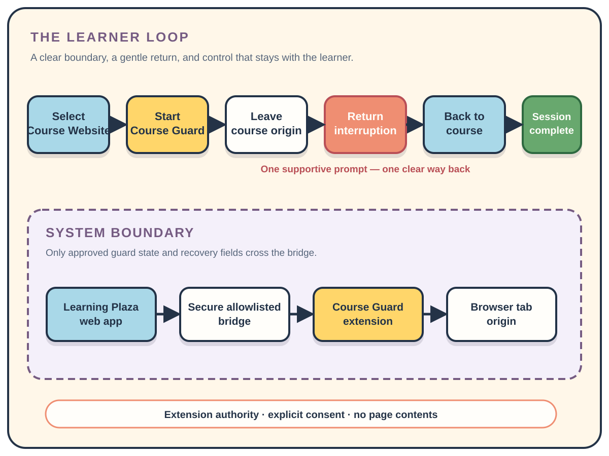
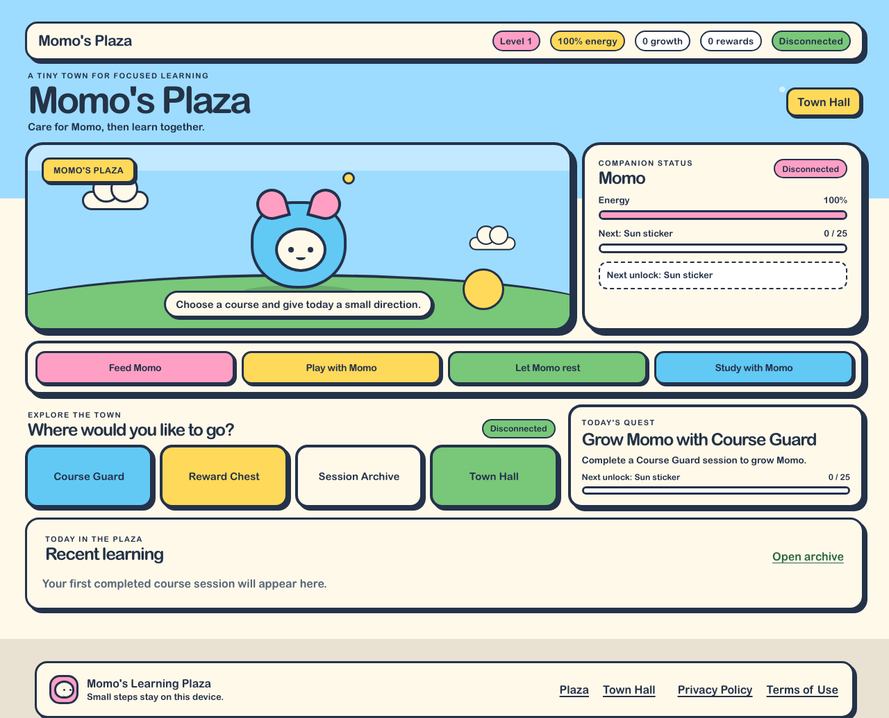
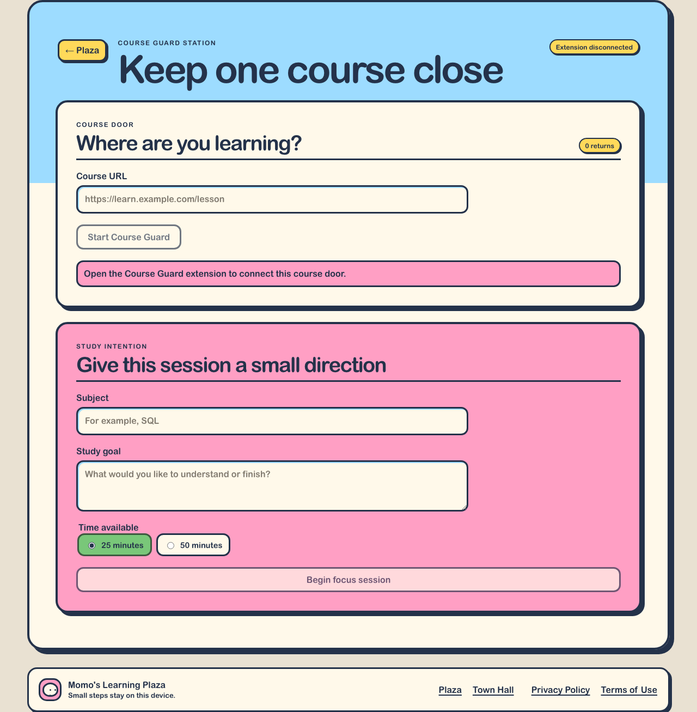
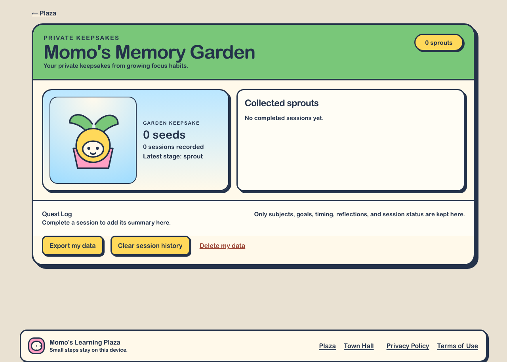
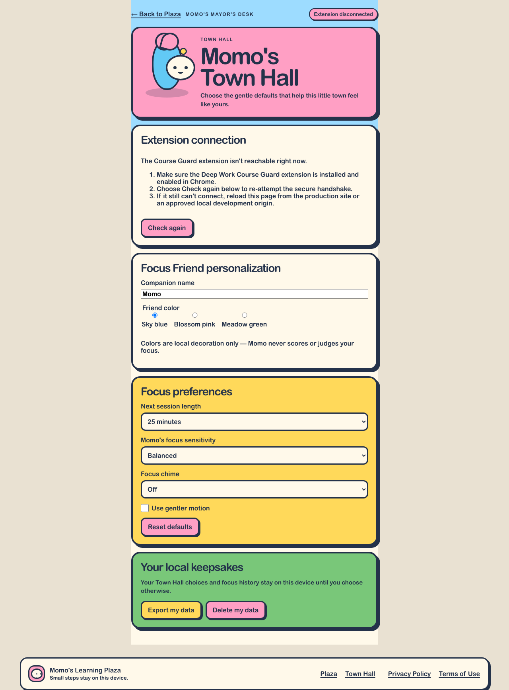
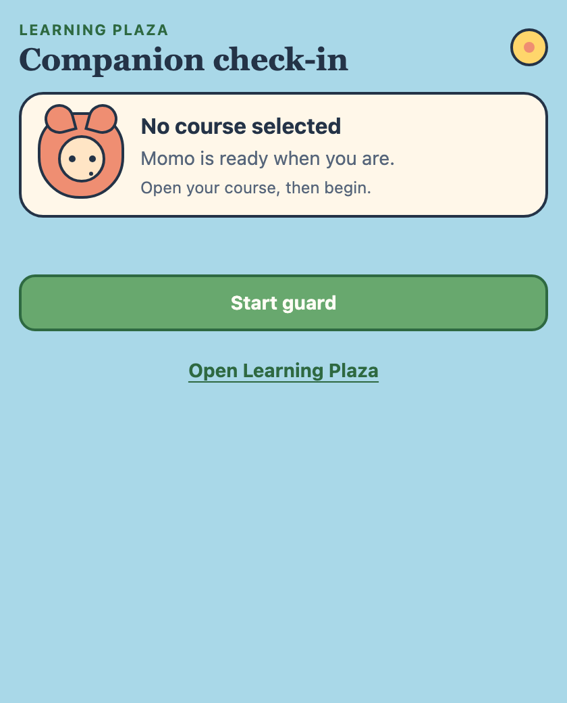

Deep Work Companion · Learning Plaza
Deep Work Course Guard: A Local-First Learning Companion for Gentle Focus
A privacy-first browser extension and companion dashboard that helps learners return to their online course without surveillance, punishment, or fixed Pomodoro intervals.
Objective
- Unwanted tab switching can interrupt online learning.
- Many blockers feel restrictive or punitive.
- Course Guard provides a gentle, learner-directed boundary.
- The system detects leaving the course website without reading page content.
- Session summaries and companion progress remain local to the browser.
Methodology

The extension is authoritative for active guard state and checks website origin, not page contents.
Companion experience
Resting → Ready → Focusing → Encouraging → Proud



Mood, energy, growth, and cosmetic unlocks are expressive progress signals, not attention or performance scores.
Privacy by design
- No page-content reading.
- No uploaded browsing history.
- No camera frames transmitted.
- Explicit permission at guard start.
- Safe handling of permission denial or revocation.
- Local session history and companion progress.
- No leaderboard, streak pressure, punishment, or attention score.

Implementation validation
- 49 unit-test files and 219 unit tests passed.
- 25 responsive Playwright tests passed.
- Desktop and mobile route audit completed.
- Extension bridge and disconnected-state checks passed.
- Production and extension builds passed.

Conclusion and future work
Deep Work Course Guard turns distraction recovery into a supportive interaction rather than a punishment. Learning Plaza combines a clear browser boundary with a friendly companion experience while keeping control, privacy, and progress local to the learner.
Potential future work
Usability testing with online learners, accessibility testing with assistive technologies, cross-browser extension support, and evaluation of return-to-course behavior.